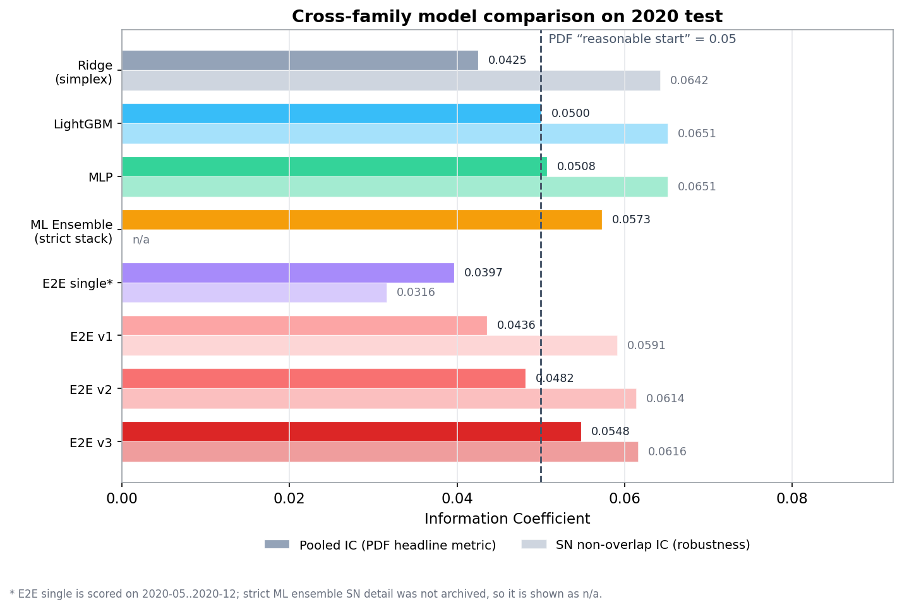
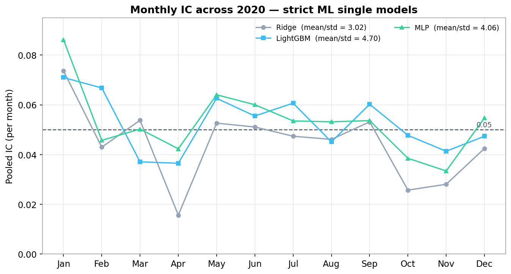
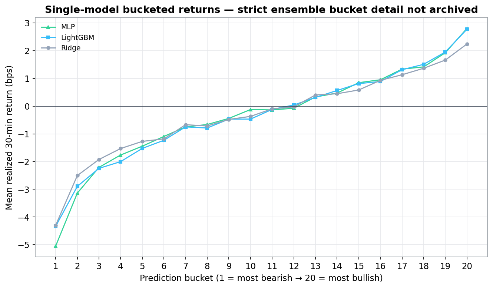
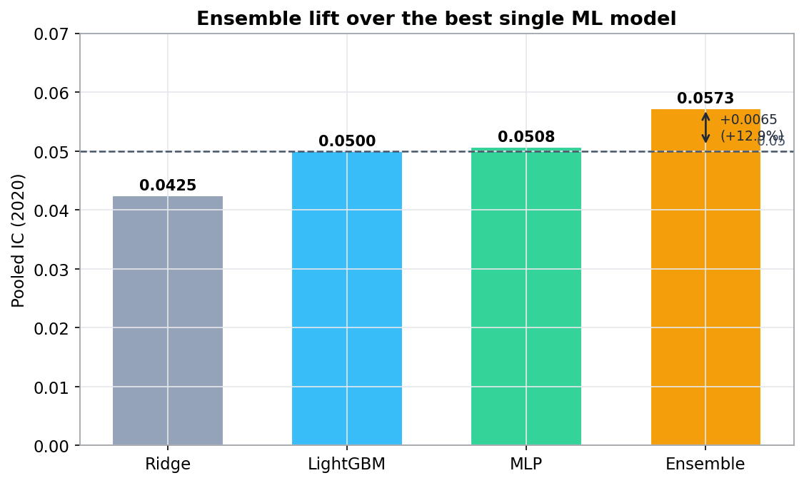
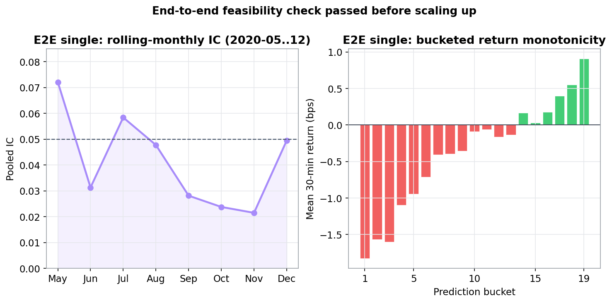
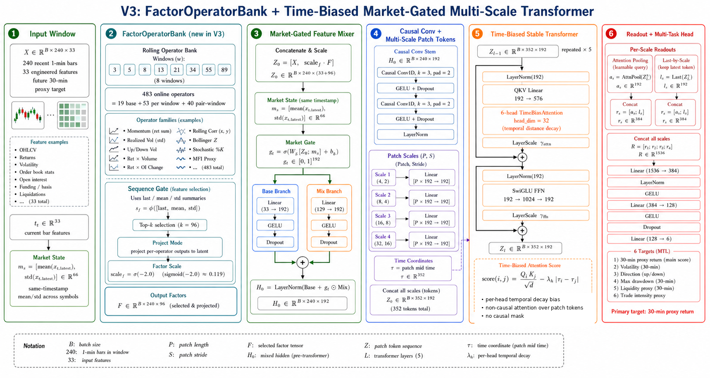
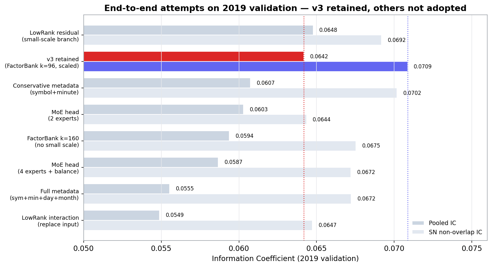
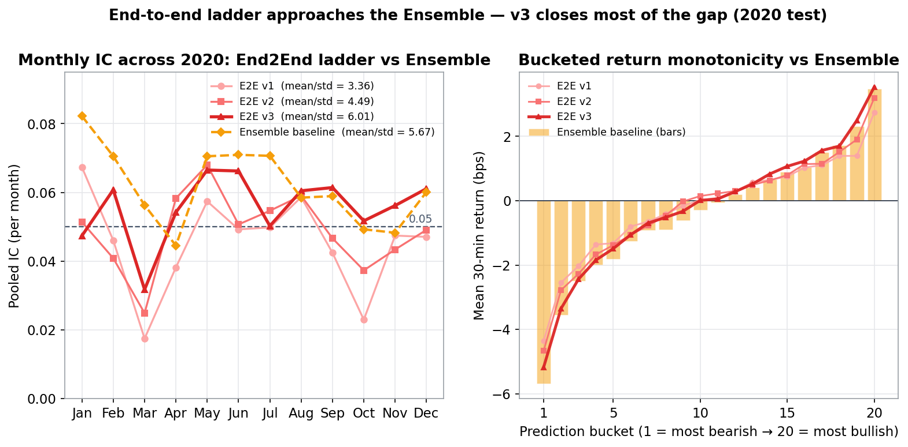
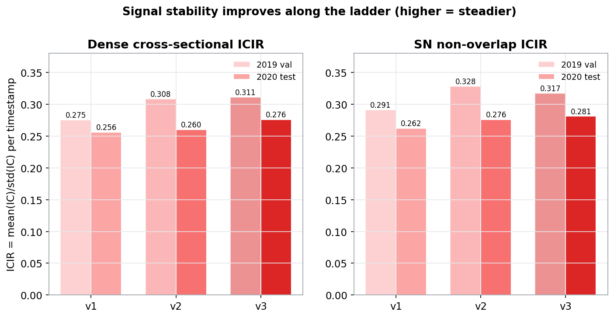
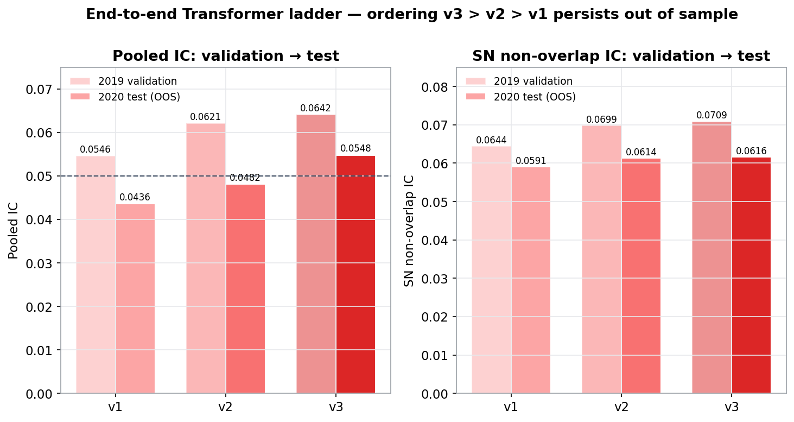

0Abstract
本报告大致总结 Take Home Test 的实现过程：首先通过基础 feature + Ridge / MLP / LightGBM 模型，在 test（2020 年）实现了单模型 pooled IC > 0.05、Ensemble 模型 pooled IC > 0.057 的效果；随后尝试端到端模型，并在其 embedding、attention、pooling readout、用 low-rank 交互网络模仿 feature 以解决维度爆炸问题等部分验证了很多有意思的想法；最终通过 end2end 单模型实现 pooled IC > 0.05，接近最佳 Ensemble 模型。
This report summarizes the implementation of the Take Home Test. First, with baseline features and Ridge / MLP / LightGBM models, the single models reach pooled IC > 0.05 and the Ensemble reaches pooled IC > 0.057 on the test set (2020). Then I explored end-to-end models, validating many interesting ideas in their embedding, attention, pooling readout, and a low-rank interaction network that mimics features to solve the dimensionality explosion; the end-to-end single model finally reaches pooled IC > 0.05, approaching the best Ensemble model.

1Introduction & Roadmap
1.1Take Home Test
核心规格：
- 任务：用 1 分钟 bar 预测 30 分钟收益 Returnt = ClosePricet+30 / ClosePricet − 1。
- 品种：数据含 57 个合成连续合约，剔除 T/TF/TS/IF/IC/IH（国债与股指）后保留 51 个；价格已做换月调整并归一化为起点 1。
- 交易时段：不同品种、不同日期的日盘/夜盘时段不同，设计时序特征时须精确识别。
- 长休市标签：每个长休市前最后 30 行标签置 NaN；长休市含（a）日盘→次日夜盘、（b）夜盘→次日日盘、（c）当日无夜盘时日盘→次日日盘。短休市需跳过并拼接——若 10:15–10:30 为短休市，则 10:00 的标签使用 10:45 的价格。
- 因果性：推断只能用当前及之前信息，训练只能用历史数据；允许滚动训练（PDF 明示这通常是稳赚的提升）。
- 时间戳：预处理向下取整到分钟。
- 评估指标：以 IC 为主——
即预测与标签的余弦相似度（池化全部品种与时点为一个 IC），0.05 为合理起点，0.2 属于「好得不真实」；辅以 R²/MSE 与 mean(IC)/std(IC)（按月）。
交付物：2018-01-01 以来全部 51 品种的预测、逐年 IC、月度 IC 曲线、简要报告与可复现代码（起止日期可配置）。主方法须为深度学习。
Core spec:
- Task. Predict the 30-minute return from 1-minute bars: Returnt = ClosePricet+30 / ClosePricet − 1.
- Universe. 57 synthetic continuous contracts; after excluding T/TF/TS/IF/IC/IH (bonds & equity-index), 51 symbols remain; prices are roll-adjusted and normalized to 1 at the start.
- Sessions. Day/night sessions differ across products and dates; time-series features must respect them.
- Long-break labelling. The last 30 rows before each long break are NaN; long breaks are (a) day→next-night, (b) night→next-day, (c) day→next-day when no night session. Short breaks are skipped and chained — if 10:15–10:30 is a short break, the label at 10:00 uses the price at 10:45.
- Causality. Inference uses only information up to t; training only on history. Rolling training is allowed (the PDF calls it an easy win).
- Timestamps. Floored to the integer minute.
- Metric. IC is primary —
i.e. the cosine similarity of prediction and label (pooled over all symbols and time). 0.05 is a reasonable start; above 0.2 is "too good to be true." Supplemented by R²/MSE and mean(IC)/std(IC) (monthly).
Deliverables. Predictions for all 51 symbols since 2018-01-01, per-year IC, a monthly IC curve, a brief report, and reproducible code with configurable start/end dates. Deep learning must be the main methodology.
1.2Methodology Roadmap
先用成熟的经典方法建立一个无泄漏的强基线，再把端到端深度学习从「小规模验证可行」推到「大规模逐步优化」。每一次架构改动都在同一套 2019 验证 / 2020 测试协议下检验。
First build a leak-free strong baseline with mature classical methods, then escalate end-to-end deep learning from "small-scale feasibility" to "large-scale step-by-step optimization." Every architectural change is tested under the same 2019-validation / 2020-test protocol.
Factors
1,144 个无泄漏因子；会话/标签基础设施。1,144 leak-free factors; session/label infra.
ML base models
Ridge / LightGBM / MLP，配日内校准与视图融合。Ridge / LightGBM / MLP with intraday calibration.
Ensemble Model
三单模型严格堆叠 → 0.0573。Strict 3-model stack → 0.0573.
E2E smoke test
小 Transformer 跑通端到端管线。Small Transformer validates the E2E pipeline.
End2End v1→v3
多尺度 patch + 时间偏置 + 市场门控 + 因子算子库。Multi-scale patch + time-bias + market gate + factor bank.
1.3Data & Baseline Features
Sessions, long/short breaks, and the label
会话检测以 ≥60 分钟 间隔判定长休市，并为每行打上 session_id、is_long_break_before 等。短休市（<60 分钟）不重置会话，从而自然实现「跳过短休、拼接前后」。标签（horizon=30）逐会话计算 label[t]=close[t+30]/close[t]−1，且 t 与 t+30 必属同一会话；会话末 30 行、长休市前 30 行、close 非有限的行均置 NaN；时间戳在加载时已取整到分钟。
Session detection flags a long break at a gap of ≥60 minutes and stamps each row with session_id, is_long_break_before, etc. Short breaks (<60 min) do not reset the session, naturally realizing "skip the short break and chain." The label (horizon=30) is computed per session as label[t]=close[t+30]/close[t]−1 with t and t+30 in the same session; the last 30 rows of a session, the 30 rows before a long break, and non-finite-close rows are NaN; timestamps are floored to the minute at load.
Baseline Features
因子库每品种构造约 1,085 个因果时序因子；每个再派生 4 类截面视图（原始、tsz 时序 z、csz 截面 z、csr 截面秩），约 4,340 个候选经 0.9 相关度去冗后保留 1,144 个。Baseline Feature 覆盖以下家族：
The library builds ~1,085 causal time-series factors per symbol; each spawns 4 cross-sectional views (raw, tsz time-series z, csz cross-sectional z, csr cross-sectional rank). About 4,340 candidates are reduced by a 0.9-correlation dedup to 1,144 retained. The baseline features span these families:
- Momentum / returns · Volatility (realized, Parkinson, downside, skew/kurtosis) · Oscillators (RSI, stochastic, CCI, Bollinger-z, CMO)
- Volume / amount (volume-z, turnover, price-volume corr, Amihud illiquidity, MFI, VWAP) · Open interest (oimom, oiz, oi-vol ratio)
- K-line geometry (BOP, body/shadows, close position) · Interactions (mom×volz, rv×volz) · Efficiency / drawdown · Lagged variants
窗口采用斐波那契式间隔（如 2,3,5,8,13,21,34,55,89…）以保持低互相关。Windows are Fibonacci-spaced (e.g. 2,3,5,8,13,21,34,55,89…) to keep correlations low.
完整的 1,144 个因子字段（含截面视图、基础因子与所属家族，支持搜索）见 → 因子字段清单子页。The full list of all 1,144 factor fields (with cross-sectional view, base factor and family, searchable) is on the → factor-field reference page.
2Linear & ML Baselines
2.1ML & Linear Base Models
三个互补的单模型：非线性深度（MLP）、树模型（LightGBM）、正则线性（Ridge）。共同点：滚动「先训后测」、多视图输出（raw / xsz / xrank / xcenter）、日内时段后校准。下表先给每个模型的要点与指标，随后逐一展开各自的优化思路。
Three complementary single models: non-linear depth (MLP), trees (LightGBM), and regularized linear (Ridge). Shared traits: rolling train-before-test, multi-view outputs (raw / xsz / xrank / xcenter), and intraday post-calibration. The table gives the key design and metrics; the paragraphs below then unpack each model's optimizations in plain terms.
| Model | 要点Key design | Pooled IC | SN IC | Monthly IR | 20-bin |
|---|---|---|---|---|---|
MLP time120_slope_a025_strong |
333 特征→1200→600→1，LayerNorm+SiLU+Dropout；损失=0.65·MSE+0.35·相关；120 分钟时段斜率校准(α=0.25)+单纯形视图融合333→1200→600→1, LayerNorm+SiLU+Dropout; loss = 0.65·MSE + 0.35·corr; 120-min slope calibration (α=0.25) + simplex view blend | 0.0508 | 0.0651 | 4.06 | 78.5 bps |
LGB ref_time90_a1_signed_abs12_a08 |
280 树, 63 叶, lr 0.035, λ=6, subsample 0.82, colsample 0.68；两段校准 time90(α=1.0)+signed_abs12(α=0.8)280 trees, 63 leaves, lr 0.035, λ=6, subsample 0.82, colsample 0.68; two-stage calibration time90 (α=1.0) + signed_abs12 (α=0.8) | 0.0500 | 0.0651 | 4.70 | 71.0 bps |
Ridge simplex_basic_full2019 |
Rank-Gaussian 变换 + Ridge(α=1.0)；单纯形(非负、和为1)视图融合Rank-Gaussian transform + Ridge (α=1.0); simplex (non-neg, sum-to-1) view blend | 0.0425 | 0.0642 | 3.02 | 65.4 bps |
MLP What was optimized
MLP 是三者中唯一的非线性深度模型，优化围绕「在极弱信号上稳住排序能力」：(1) 结构——333 维特征 → 1200 → 600 → 1，每层 LayerNorm + SiLU + Dropout，让网络在归一化后稳定训练、不被个别尺度过大的特征带偏；(2) 损失函数——不用纯 MSE，而是 0.65·MSE + 0.35·相关损失：MSE 管住量级，相关项直接对齐我们真正在意的 IC（排序方向），两者配比是在 2019 上调出的折中；(3) 日内斜率校准（α=0.25）——预测出来后，按 120 分钟时段估计「预测→真实收益」的斜率并温和地拉回真实尺度（详见下方校准说明）；(4) 单纯形视图融合——把 raw / 截面 z 等多个视图用一组「非负、和为 1」的权重融合，等价于一个不会过拟合的稳健加权平均。最终单模型 Pooled IC 0.0508、月度 IR 4.06。
The MLP is the only non-linear deep model of the three, and its optimizations are about keeping ranking power stable on a very weak signal: (1) architecture — 333 features → 1200 → 600 → 1 with LayerNorm + SiLU + Dropout per layer, so training stays stable after normalization and is not dragged by a few large-scale inputs; (2) loss — not plain MSE but 0.65·MSE + 0.35·correlation: the MSE term controls magnitude while the correlation term directly aligns the metric we actually care about (IC / ranking), the 0.65/0.35 split being tuned on 2019; (3) intraday slope calibration (α=0.25) — after prediction, the prediction→return slope is estimated per 120-minute time bucket and the output is gently pulled back to the true return scale (see the calibration note below); (4) simplex view blend — multiple views (raw, cross-sectional z, …) are fused with non-negative weights that sum to 1, i.e. a robust weighted average that cannot over-fit the blend. Final single-model Pooled IC 0.0508, monthly IR 4.06.
LightGBM What was optimized
LightGBM 负责捕捉特征间的非线性交互与阈值效应，优化重点是「强正则化下的稳健树」：(1) 容量与正则——280 棵树、63 叶、学习率 0.035、L2 正则 λ=6，刻意把单棵树做浅、靠数量与小步长平滑拟合，避免在噪声标签上过拟合；(2) 双重随机——行采样 0.82、列采样 0.68，每棵树只看部分样本与部分特征，进一步降方差；(3) 两段后校准——先做 90 分钟时段校准（time90，α=1.0）对齐日内尺度，再做带符号绝对值校准（signed_abs12，α=0.8）修正「预测幅度与真实幅度」的非线性关系。它的月度 IR（4.70）是三者最高，说明逐月最稳。
LightGBM captures non-linear feature interactions and threshold effects; its optimization is about a well-regularized, robust tree ensemble: (1) capacity & regularization — 280 trees, 63 leaves, learning rate 0.035, L2 λ=6 — deliberately shallow trees that fit smoothly through count and a small step size, avoiding over-fit on noisy labels; (2) double subsampling — row subsample 0.82 and column subsample 0.68 so each tree sees only part of the data and features, cutting variance further; (3) two-stage calibration — first a 90-minute time-bucket calibration (time90, α=1.0) to align the intraday scale, then a signed-magnitude calibration (signed_abs12, α=0.8) that corrects the non-linear "predicted magnitude vs realized magnitude" relationship. Its monthly IR (4.70) is the highest of the three, i.e. the steadiest month to month.
Ridge What was optimized
Ridge 是最朴素的正则线性基线，价值在于「极其稳、与前两者相关性低」，因而是 Ensemble 的好材料。优化点有两处：(1) Rank-Gaussian 变换——先把每个特征按秩映射到高斯分布，既消除厚尾/异常值的影响，又让线性模型面对的输入分布良好，这一步对线性模型的提升远大于对树模型；(2) 单纯形视图融合——同样用「非负、和为 1」的权重把多个截面视图融合，避免线性回归在共线视图上学出大正负抵消的权重。它单模型 Pooled IC 最低（0.0425），但 SN 非重叠 IC（0.0642）与另两者几乎持平，说明它的信号「干净」、过拟合少——这正是它在 Ensemble 里能贡献增量的原因。
Ridge is the plainest regularized-linear baseline; its value is being extremely stable and weakly correlated with the other two, which makes it good ensemble material. Two optimizations: (1) Rank-Gaussian transform — each feature is rank-mapped to a Gaussian, removing heavy-tail/outlier effects and giving the linear model a well-behaved input distribution (this helps a linear model far more than a tree model); (2) simplex view blend — again non-negative, sum-to-1 weights across cross-sectional views, preventing the regression from learning large offsetting weights on collinear views. Its single-model Pooled IC is the lowest (0.0425), but its SN non-overlap IC (0.0642) is essentially level with the others — its signal is "clean" with little over-fit, which is exactly why it adds incremental value inside the Ensemble.


2.2Ensemble Model
保留的 Ensemble 是三个严格单模型（MLP / LGB / Ridge）的一个小而可审计的堆叠 raw_xsz6__signed_ridge_a01__time90_a0.25：
- 使用 6 个视图：
mlp, lgb, ridge, mlp_xsz, lgb_xsz, ridge_xsz（*_xsz为同时刻截面 z 视图）。 - 拟合一个小的 signed ridge（α=0.1）堆叠，再叠加保守的 90 分钟日内时段乘子（强度 0.25）。
- 在 2019 外折上筛选 137 个经典集成候选，仅用 2019 选择器（mean/std、q3+h2、q3+q4+h2、min+mean、h2）选出，全 2019 重拟合，2020 仅审计一次。
结果（2020）：Pooled IC 0.0573、月度均值 0.0596、月度 IR 4.95，相对最优单模型（MLP 0.0508）提升约 +12.9%。
The retained Ensemble is a small, auditable stack of the three strict single models (MLP / LGB / Ridge), raw_xsz6__signed_ridge_a01__time90_a0.25:
- Six views:
mlp, lgb, ridge, mlp_xsz, lgb_xsz, ridge_xsz(*_xsz= same-timestamp cross-sectional z view). - Fit a small signed ridge (α=0.1) stack, then a conservative 90-minute intraday time-bucket multiplier (strength 0.25).
- Screen 137 classic ensemble candidates on 2019 outer folds; select by 2019-only selectors (mean/std, q3+h2, q3+q4+h2, min+mean, h2); refit on full 2019; audit once on 2020.
Result (2020): Pooled IC 0.0573, monthly mean 0.0596, monthly IR 4.95, about +12.9% over the best single model (MLP 0.0508).

3End-to-End Model
3.1Smoke Test
这一步是一个 smoke test：用一个小的、基于 Transformer 的端到端模型，验证端到端方案能跑通、且确实能预测。指标确认 OK（2020-05..12 滚动 pooled IC 0.0397），于是后续开始一步步优化。可以看出，smoke test 的 e2e 模式主要问题在于不稳定，因此后续是在保证 scale up 的基础上，同时保证我们模型能及时收敛。小模型规格：d_model=128、4 头、4 层、FFN=256、序列长 120、单尺度 patch(6,3)、低秩输入交互 + FactorOperatorBank(top_k=48)、MoE-4 头。下图把它与已建立的 ML 基线放在一起对比。
This step is a smoke test: a small Transformer-based end-to-end model to verify that the end-to-end approach runs and actually predicts. The metric came out OK (rolling pooled IC 0.0397 on 2020-05..12), so I then began optimizing step by step. One thing this smoke test makes clear is that the main problem of the e2e mode is instability; so the subsequent work is to scale up while at the same time keeping the model converging in time. Small-model spec: d_model=128, 4 heads, 4 layers, FFN=256, sequence length 120, single-scale patch (6,3), low-rank input interaction + FactorOperatorBank (top_k=48), MoE-4 head. The figure below places it side by side with the established ML baselines.

3.2v1 → v3 Optimization Ladder
这部分工作量较大，所尝试的优化点中大约五分之一能起到确定的优化作用；我们把这一探索过程归纳为 v1→v3 的优化路径，下面逐步描述——既标出被采纳的有效改动，也用灰底标出消融失败、未被采纳的尝试及其估计的失败原因。三代共享：33 维归一化输入（11 个 z-score 化 bar 特征 + 6 个截面相对特征等，裁剪到 [−8,8]）、240 分钟回看窗、6 个多任务标签（5/10/30/60 分钟收益 + 已实现波动 + 振幅，主标签为 proxy_ret_30m_cs_zscore），加权 Huber 损失。协议：2017–2018 训练、2019 验证；2020 行用 pre-2020 重拟合后测试。判据：必须同时改善 2019 的 Pooled IC 与 SN 非重叠 IC 才采纳。
This part involved a large amount of work; roughly one fifth of the attempted optimizations brought a definite gain. We summarize the exploration as a v1→v3 path and describe it step by step — marking both the adopted, effective changes and (on a gray background) the attempts that were ablated away, with their estimated failure reasons. The three generations share a 33-dim normalized input (11 z-scored bar features + 6 cross-sectional relative features, clipped to [−8,8]), a 240-minute lookback, and 6 multitask labels (5/10/30/60-min returns + realized volatility + range; main label proxy_ret_30m_cs_zscore), with a weighted Huber loss. Protocol: train 2017–2018, validate 2019; the 2020 rows refit on pre-2020 then test. Gate: a change is adopted only if it lifts both the 2019 Pooled IC and SN non-overlap IC.
v1 · Gated Multi-Scale Patch Transformer + Dual Pooling
- GatedFeatureMixer：33→192，
base(x)+σ(gate(x))·mix(x)，对弱而多的输入做带门通道混合。 - CausalConvStem：两层因果 Conv1d（k=3、k=5，左 padding）做局部时序平滑。
- 多尺度 Patch Embedding：(4,2)(8,4)(16,8)(32,16) 四个 (patch,stride)，把 240 步切成 ~221 个 token，每尺度加可学习尺度嵌入。
- 5 层 Pre-Norm Transformer（6 头）+ 双 pooling：注意力池化（全局加权）∥ 各尺度末 token 池化（保留近因）。
- 参数 5.50M。验证 0.0546 / 测试 0.0436。这是第一个强深度端到端基线。
- GatedFeatureMixer: 33→192 via
base(x)+σ(gate(x))·mix(x)— gated channel mixing for many weak inputs. - CausalConvStem: two causal Conv1d layers (k=3, k=5, left-padded) for local temporal smoothing.
- Multi-scale patch embedding: four (patch,stride) pairs (4,2)(8,4)(16,8)(32,16) cut 240 steps into ~221 tokens, each with a learnable scale embedding.
- 5 pre-norm Transformer blocks (6 heads) + dual pooling: attention pooling (global weighting) ∥ last-token-per-scale pooling (recency).
- 5.50M params. Validation 0.0546 / test 0.0436. The first strong deep end-to-end baseline.

v2 · Time-Bias + Market-Gate + Stable Residual
在 v1 上叠加四项（仅保留通过 2019 验证者）：
- TimeBiasAttention：每个头一个指数时间衰减偏置，按 token 的真实时间坐标 τ 计算 score(i,j)=QiKj/√d − λh·|τi−τj|，半衰期对数均布于 4..240。
- SwiGLU FFN：
w3(SiLU(gate)·value)，192→512→192。 - LayerScale：每分支可学习的逐通道残差缩放（初值 0.1）。
- MarketGatedFeatureMixer：注入同一时间戳跨品种均值/标准差（66 维市场状态），让特征门以市场状态为条件。
参数 5.03M。验证 0.0621 / 测试 0.0482。留一验证证实这四项都必要：去掉 TimeBias → 0.0567、去掉 SwiGLU+LayerScale → 0.0579，均低于 v2。
Four additions on top of v1 (keeping only those that passed 2019 validation):
- TimeBiasAttention: a per-head exponential time-decay bias on real token time coordinates τ: score(i,j)=QiKj/√d − λh·|τi−τj|, half-lives log-spaced over 4..240.
- SwiGLU FFN:
w3(SiLU(gate)·value), 192→512→192. - LayerScale: a learnable per-channel residual scale per branch (init 0.1).
- MarketGatedFeatureMixer: injects same-timestamp cross-symbol mean/std (66-dim market state) so the feature gate is conditioned on market regime.
5.03M params. Validation 0.0621 / test 0.0482. Leave-one-out checks confirm all four matter: removing TimeBias → 0.0567, removing SwiGLU+LayerScale → 0.0579, both below v2.
- 跨层融合（layer fusion） Pooled 0.0546 / SN 0.0658——SN 升、但 Pooled 持平偏降，未过门。原因：把每层输出都融合进来，用冗余的低信号特征稀释了末层表示。
- RevIN 可逆实例归一化 Pooled 0.0482 / SN 0.0653——明显为负。原因：逐窗口去均值/方差会抹掉截面层面的水平与尺度，而标签本就是截面 z-score，恰恰依赖这些信息。
- 截面注意力（cross-section） Pooled 0.0534 / SN 0.0667——低于已含时间偏置的基线。原因：目前还没有严格设计，没有结合期货相互间的相关关系来充分优化结果，后续可作为 TODO。
- 跨变量注意力（cross-variate） Pooled 0.0540 / SN 0.0633——为负；市场+跨变量也只是 dense 升而门控指标降。原因：对 33 个特征通道做注意力会过拟合通道交互，而市场状态门控用更低成本就拿到了有用的跨信息。
- Cross-layer fusion Pooled 0.0546 / SN 0.0658 — SN up but Pooled flat-to-down, so the gate fails. Why: fusing every block's output dilutes the final-layer representation with redundant low-signal features.
- RevIN reversible instance norm Pooled 0.0482 / SN 0.0653 — clearly negative. Why: per-window de-normalization strips the cross-sectional level/scale that the (already cross-sectionally z-scored) label depends on.
- Cross-sectional attention Pooled 0.0534 / SN 0.0667 — below the time-bias baseline. Why: it is not yet rigorously designed — it does not yet incorporate the cross-correlation structure across futures to fully optimize the result; left as a future TODO.
- Cross-variate attention Pooled 0.0540 / SN 0.0633 — negative; market + cross-variate only lifts dense IC while the gate metrics drop. Why: attention over the 33 feature channels over-fits channel interactions, whereas market-state gating captures the useful cross-information far more cheaply.

v3 · + FactorOperatorBank
v3 在 v2 前端加入一个在线、可微的算子库（FactorOperatorBank）：前向时构造 483 个基础 feature 字段（19 全局 + 53×8 分窗 + 40 长短窗差），窗口 [3,5,8,13,21,34,55,89]；家族含 K 线实体/影线、收益×量/额/OI 变化、滚动动量、已实现/上下行波动、量价相关、布林 z、随机指标、MFI 代理、长短趋势差等。这里刻意把它们写作基础 feature 字段而非「因子」，以免与前面的基线模型显得太重复——其主要作用是丰富原先过于简单的输入字段（仅 33 维）。一个序列级门读取 [末值; 均值; 标准差]（99 维）选出 top_k=96、投影到 96 维；以 factor_scale_init=−2.0（σ≈0.119）温和注入，让模型从「轻用新字段」起步、再自行决定加重。参数 5.23M。验证 0.0642 / 测试 0.0548——三代最佳。
v3 prepends an online, differentiable operator bank (FactorOperatorBank): it constructs 483 basic feature fields at forward time (19 global + 53×8 per-window + 40 short/long-window diffs) over windows [3,5,8,13,21,34,55,89]. Families include K-line body/shadow, return × volume/amount/OI change, rolling momentum, realized/upside/downside vol, price-volume correlation, Bollinger-z, stochastic, an MFI proxy, and short/long trend differences. They are deliberately framed as basic feature fields rather than "factors", so as not to look too repetitive with the earlier baseline model — their main purpose is to enrich the originally over-simple input (only 33-dim). A sequence-level gate reads [last; mean; std] (99-dim), selects top_k=96, projects to 96 dims, and injects them gently with factor_scale_init=−2.0 (σ≈0.119) — starting light, then learning whether to amplify. 5.23M params. Validation 0.0642 / test 0.0548 — the best of the three.
- FactorBank top_k=160、全尺度初始化 Pooled 0.0594 / SN 0.0675——两项都低于基线，且出现一个被跳过的 non-finite 梯度批。原因：160 个算子以全尺度注入会盖过已验证的信号通路、并破坏训练稳定性。→ 用
factor_scale_init=−2.0（σ≈0.12）+ top_k=96 修复，二者都改善，这才成为 v3。 - 低秩交互「替换」输入块 Pooled 0.0549 / SN 0.0647——两项都大幅下降。原因：它丢掉了已验证的门控混合/卷积前端，低秩瓶颈本身又损失信息。
- 低秩残差小分支 Pooled 0.0648 / SN 0.0692——Pooled 其实略高于 v3，但 SN 非重叠降到基线之下，暂不采用。原因：它拟合了重叠相关结构，恰被稳健指标惩罚；「两项都要升」这条规则正是为拦住这种情况而设。
- 全量元数据嵌入（symbol+minute+day+month）Pooled 0.0555 / SN 0.0672——明显更差。原因：高基数身份嵌入在单 epoch 上记住品种/日期 → 过拟合。
- 保守元数据（symbol+minute）Pooled 0.0607 / SN 0.0702——稳定、优于全量元数据，但仍低于「仅 FactorBank」。原因：静态身份能加的，不如动态、有金融含义的因子算子。
- MoE 头：4 专家+均衡惩罚 Pooled 0.0587 / SN 0.0672 与 2 专家、无均衡 Pooled 0.0603 / SN 0.0644——均拒绝。原因：这并非真正的 expert，只是在输出头上增加可训练参数。
- FactorBank top_k=160, full-scale init Pooled 0.0594 / SN 0.0675 — below baseline on both, plus a skipped non-finite-gradient batch. Why: injecting 160 operators at full scale overpowers the validated signal path and destabilizes training. → Fixed by
factor_scale_init=−2.0(σ≈0.12) and top_k=96, which improved both — this became v3. - Low-rank interaction replacing the input block Pooled 0.0549 / SN 0.0647 — both drop hard. Why: it discards the validated gated-mixer/conv front-end, and the low-rank bottleneck itself loses information.
- Low-rank residual branch Pooled 0.0648 / SN 0.0692 — Pooled actually edges out v3, but SN non-overlap drops below baseline, so it is set aside for now. Why: it fits overlap-correlated structure that the robustness metric penalizes; "both must improve" is exactly the rule that catches this.
- Full metadata embeddings (symbol+minute+day+month) Pooled 0.0555 / SN 0.0672 — clearly worse. Why: high-cardinality identity embeddings memorize symbol/date on a single epoch and over-fit.
- Conservative metadata (symbol+minute) Pooled 0.0607 / SN 0.0702 — stable and better than full-meta, but still below FactorBank-only. Why: static identity adds less than dynamic, financially-grounded factor operators.
- MoE head: 4 experts + balance Pooled 0.0587 / SN 0.0672 and 2 experts, no balance Pooled 0.0603 / SN 0.0644 — both rejected. Why: these are not true experts — just extra trainable parameters added on the output head.

Training setup and Ablation Example
AdamW（lr 2e-4、wd 1e-4、betas 0.9/0.95）、1000 步 warmup 后衰减到 2e-5、梯度裁剪 1.0、AMP、EMA 0.999（v2/v3）、1 个 epoch、按时间戳采样（每批 16 个时间戳 × 约 32 品种）、seed 11。
AdamW (lr 2e-4, wd 1e-4, betas 0.9/0.95), warmup 1000 steps then decay to 2e-5, grad-clip 1.0, AMP, EMA 0.999 (v2/v3), 1 epoch, timestamp-batch sampling (16 timestamps × ~32 symbols), seed 11.

3.3Valuable Takeaways
Patch Embedding
把 240 步的 1 分钟序列像「字符流」一样切成 patch、再投影成 token，本质等同于 LLM 的子词分词与 ViT 的图像分块：原始逐分钟序列又长又碎，逐点注意力既昂贵又难抓语义；分块把局部微结构压缩成「有语义的 token」，并把注意力长度缩短一个量级。多尺度（4→32 bar）相当于多套「词表」。我之前做的一些病理切片等计算机视觉深度学习，其中也用到了这种 patch 思想——把大图切成小块再编码。
Cutting the 240-step 1-minute series into patches and projecting them into tokens is essentially LLM subword tokenization and ViT image patching: a raw per-minute series is long and fragmented, so point-wise attention is expensive and semantically weak; patching compresses local microstructure into semantic tokens and shortens the attention length by an order of magnitude. The multi-scale design (4→32 bars) is like several vocabularies. Some of the pathology-slide computer-vision deep learning I did before also used this patch idea — cutting a large image into small blocks before encoding.
Attention Time-Bias
日内信号有强烈近因性：越近的 bar 越相关。我在注意力 logits 上叠加按真实时间距离的逐头指数衰减偏置（而非 token 序号），这是 ALiBi 的金融时序化改造，与相对位置编码/T5 偏置一脉相承，给模型注入「就近优先」的归纳偏置。
Intraday signals are strongly recency-biased: nearer bars matter more. I add a per-head exponential decay bias on the attention logits keyed to real time distance (not token index) — a finance-time adaptation of ALiBi, in the lineage of relative position encodings and the T5 bias, injecting a "prefer-nearby" inductive bias.
Pooling Readout
不用朴素的 [CLS] 或单一末 token，而是注意力池化（可学习 query 对全部 patch token 加权，源自 Set Transformer 的注意力聚合）与各尺度末 token 池化（保留最新状态）双管齐下：前者汇聚分散证据，后者守住近因；拼接融合后兼顾「全局重要性」与「时效性」。
Rather than a naive [CLS] or a single last token, I combine attention pooling (a learnable query weighting all patch tokens, à la Set Transformer's attention aggregation) with last-token-per-scale pooling (keeping the freshest state): the former gathers distributed evidence, the latter guards recency; fused, they balance global importance with timeliness.
Low-Rank Interaction to Shrink the Search Space
这是因子工程的「网络内化」：在弱信号 + 巨大假设空间下，无约束的稠密网络会在无数条近似等价的路径上震荡、难以收敛到真正的 alpha 流形。解法是给网络一个低秩、有金融含义、可训练的交互前端，主动把搜索空间压向信号：
- GatedFeatureMixer / MarketGatedFeatureMixer：低秩门控通道混合，相当于「软特征选择」。
- FactorOperatorBank：把「收益×量变」「波动以 OI 变化为条件」「长短动量差」「布林 z」「MFI」等因子化机（FM）式低秩成对交互显式构造出来，再用稀疏 top-k 门选择，而非让稠密网络从零摸索。温和注入与 top-k 稀疏实现「先收缩、再放开」。
This is the in-network version of factor engineering: under weak signal and a vast hypothesis space, an unconstrained dense net oscillates across countless near-equivalent paths and struggles to converge onto the true alpha manifold. The remedy is a low-rank, financially-meaningful, trainable interaction front-end that compresses the search space toward signal:
- GatedFeatureMixer / MarketGatedFeatureMixer: low-rank gated channel mixing — a soft feature selection.
- FactorOperatorBank: explicitly constructs factorization-machine-style low-rank interactions ("return × volume change", "vol conditioned on OI change", "short/long momentum difference", "Bollinger-z", "MFI"), then selects them with a sparse top-k gate — rather than asking a dense net to rediscover them. Gentle injection plus top-k sparsity implements "shrink first, then release."
LayerScale
逐通道、可学习的小残差缩放（初值 0.1）让深层残差路径在训练初期保持平静，避免在仅 1 个 epoch、标签极噪的体制下被过大的残差更新带偏。与 ReZero、DeepNet 同属「让残差从小处起步」的稳定化思路。
A per-channel learnable residual scale (init 0.1) keeps the deep residual path calm early in training, so the optimizer is not whipsawed by oversized residual updates under a 1-epoch, very-noisy-label regime. It belongs to the "start residuals small" family alongside ReZero and DeepNet.
SwiGLU FFN
用门控线性单元（GLU）家族的 SwiGLU 替代普通 FFN：w3(SiLU(gate)·value)，在相近参数量下增强 FFN 的非线性表征，是现代 Transformer/LLM（PaLM、LLaMA）的稳健经验之选。
Replacing the plain FFN with a GLU-family SwiGLU — w3(SiLU(gate)·value) — strengthens the FFN's non-linear capacity at comparable parameter count, a robust empirical choice in modern Transformers/LLMs (PaLM, LLaMA).
Market Gating, Pre-Norm, EMA, Huber, Multitask
市场门控用同时刻跨品种统计量作为条件（FiLM 式条件化），因为「同一局部形态是延续还是反转常取决于大盘状态」；Pre-Norm 稳定深层训练；EMA（Polyak 平均）平滑评估权重；Huber 抗厚尾收益噪声；多任务辅助标签（波动/振幅/多 horizon）作为正则信号。需特别说明：这里的多任务 Label 仍在验证中；其余各项（时间偏置、SwiGLU、LayerScale、市场门控、Pre-Norm、EMA、Huber）均已通过消融实验证明有效。
Market gating conditions on same-timestamp cross-symbol statistics (FiLM-style conditioning), because whether a local pattern means continuation or reversal often depends on the broad market state; pre-norm stabilizes deep training; EMA (Polyak averaging) smooths evaluation weights; Huber resists heavy-tailed return noise; multitask auxiliary labels (volatility/range/multi-horizon) act as a regularizing signal. Note: the multitask labels are still under validation; the others (time-bias, SwiGLU, LayerScale, market gating, pre-norm, EMA, Huber) have all been shown effective by ablation.
3.4Results & Visualizations
Master results table (2020 test)
| Family | Model | Params | Pooled IC | SN non-ov IC | Window |
|---|---|---|---|---|---|
| ML | mlp_time120_slope_a025_strong | — | 0.050756 | 0.065097 | 2020 |
| ML | lgb_ref_time90_a1_signed_abs12_a08 | — | 0.050034 | 0.065138 | 2020 |
| ML | ridge_simplex_basic_full2019 | — | 0.042481 | 0.064183 | 2020 |
| ML | Ensemble · raw_xsz6 signed-ridge + time90 | 3 models | 0.057293 | n/a | 2020 |
| E2E | end2end single (smoke test) | 1.42M | 0.039660 | 0.031582 | 2020-05..12 |
| E2E | v1 · Gated MS-Patch + Dual Pooling | 5.50M | 0.043578 | 0.059084 | 2020 |
| E2E | v2 · Time-Bias + Market-Gate + Stable | 5.03M | 0.048159 | 0.061365 | 2020 |
| E2E | v3 · + FactorOperatorBank | 5.23M | 0.054808 | 0.061614 | 2020 |

End2End ladder: validation vs test
| Version | 2019 Val Pooled | 2020 Test Pooled | 2019 Val SN | 2020 Test SN |
|---|---|---|---|---|
| v1 | 0.054609 | 0.043578 | 0.064411 | 0.059084 |
| v2 | 0.062069 | 0.048159 | 0.069863 | 0.061365 |
| v3 | 0.064172 | 0.054808 | 0.070858 | 0.061614 |
Stability (ICIR)


4Analysis & Conclusion
4.1No-Leakage & Reproduction
- 因果特征：滚动窗回看不足时掩码；时序 z 用 120 期滚动；截面视图仅用当刻数据；滞后因子跨会话掩码。
- 标签嵌牌：长休市前 30 行、会话末 30 行置 NaN。
- 严格时间切分：ML 单模型滚动「先训后测」；Ensemble 在 2019 外折选择、全 2019 拟合、2020 仅审计一次。
- End2End 阶梯：2017–2018 训练、2019 验证做选择/消融；2020 行用 pre-2020 重拟合后测试。选择阶段绝不触碰测试标签。
- 起止日期可配置，满足样本外测试要求。
- Causal features: rolling windows masked when lookback is insufficient; time-series z over 120 periods; cross-sectional views use only the current instant; lagged factors masked across sessions.
- Label embargo: the 30 rows before a long break and the last 30 of a session are NaN.
- Strict temporal splits: ML singles roll train-before-test; the Ensemble selects on 2019 outer folds, fits on full 2019, and audits 2020 only once.
- End2End ladder: train 2017–2018, validate 2019 for selection/ablation; the 2020 rows refit on pre-2020 then test. The selection stage never touches test labels.
- Configurable start/end dates, satisfying the out-of-sample requirement.
4.2Conclusion & Future Work
本 Project 围绕「用深度学习预测中国期货 30 分钟收益」这一任务，完整走过了从经典基线到端到端模型的两条技术线。第一条线用基础 feature 配合 Ridge / LightGBM / MLP 三个互补单模型，并以一个小而可审计的严格堆叠得到 Ensemble（Pooled IC 0.0573），在纯 IC 上最强、最稳，确立了一个无泄漏的强基线。第二条线把 Transformer 端到端模型从 smoke test 一路推进到 v1→v3：最终 End2End v3（Pooled IC 0.0548）作为单一深度模型已逼近 Ensemble，并沿途验证了多尺度 patch embedding、时间偏置注意力、池化读出、以及「把因子工程内化为可训练低秩交互结构」等一系列设计的有效性。
主要收获（Takeaway）。(1) 在弱信号、巨大假设空间下，用低秩、有金融含义的结构主动压缩搜索空间，比让稠密网络从零摸索更容易收敛到真正的 alpha；(2)「双指标（Pooled + SN 非重叠）× 2019 验证」这套纪律，是泛化能从验证持续到测试的关键——它拦下了一批看似诱人却消融失败的改动（RevIN、跨层/截面/跨变量注意力、低秩残差、元数据嵌入、MoE 头）；(3) 端到端模型的主要瓶颈是稳定性而非容量，「先收缩、再放开」的温和注入与稀疏门控尤为关键。
未来工作。(1) 对 v3 做按月滚动复训（PDF 明示的稳赚提升，end2end_rolling 已搭好脚手架）；(2) 把 Ensemble 与 v3 跨族融合；(3) 严格设计、结合期货相互间相关关系的截面/跨品种注意力；(4) 更长训练、更精细的在线因子剪枝，以及完成多任务 Label 的验证。
This project addresses "predicting 30-minute China-futures returns with deep learning" by carrying two technical lines all the way from a classical baseline to an end-to-end model. The first line pairs basic features with three complementary single models (Ridge / LightGBM / MLP) and a small, auditable strict stack to reach the Ensemble (Pooled IC 0.0573) — strongest and steadiest on raw IC, establishing a leak-free strong baseline. The second line pushes a Transformer end-to-end model from a smoke test through v1→v3: the final End2End v3 (Pooled IC 0.0548), a single deep model, already approaches the Ensemble and validates a series of designs along the way — multi-scale patch embedding, time-biased attention, pooling readout, and "internalizing factor engineering as trainable low-rank interaction structure."
Takeaways. (1) Under weak signal and a vast hypothesis space, actively compressing the search space with low-rank, financially-meaningful structure converges onto real alpha more easily than asking a dense net to rediscover it from scratch; (2) the "two-metric (Pooled + SN non-overlap) × 2019-validation" discipline is what makes generalization persist from validation to test — it rejected a batch of tempting-but-failing changes (RevIN, cross-layer/cross-section/cross-variate attention, low-rank residual, metadata embeddings, MoE heads); (3) the end-to-end model's main bottleneck is stability rather than capacity, so "shrink first, then release" — gentle injection and sparse gating — matters most.
Future work. (1) Monthly rolling refit of v3 (the PDF's easy win; end2end_rolling provides the scaffold); (2) cross-family fusion of the Ensemble with v3; (3) a rigorously-designed cross-sectional / cross-symbol attention that incorporates the cross-correlations across futures; (4) longer training, finer online factor-bank pruning, and completing the multitask-label validation.
4.3References
- Dosovitskiy, A. et al. (2021). An Image is Worth 16×16 Words: Transformers for Image Recognition at Scale. ICLR.
- Nie, Y., Nguyen, N. H., Sinha, P., Kalagnanam, J. (2023). A Time Series is Worth 64 Words: Long-term Forecasting with Transformers (PatchTST). ICLR.
- Sennrich, R., Haddow, B., Birch, A. (2016). Neural Machine Translation of Rare Words with Subword Units (BPE). ACL.
- Press, O., Smith, N. A., Lewis, M. (2022). Train Short, Test Long: Attention with Linear Biases Enables Input Length Extrapolation (ALiBi). ICLR.
- Shaw, P., Uszkoreit, J., Vaswani, A. (2018). Self-Attention with Relative Position Representations. NAACL.
- Raffel, C. et al. (2020). Exploring the Limits of Transfer Learning with a Unified Text-to-Text Transformer (T5). JMLR.
- Lim, B., Arık, S. Ö., Loeff, N., Pfister, T. (2021). Temporal Fusion Transformers for Interpretable Multi-horizon Time Series Forecasting. Int. J. Forecasting.
- Lee, J. et al. (2019). Set Transformer: A Framework for Attention-based Permutation-Invariant Neural Networks. ICML.
- Rendle, S. (2010). Factorization Machines. ICDM.
- Guo, H. et al. (2017). DeepFM: A Factorization-Machine based Neural Network for CTR Prediction. IJCAI.
- Tolstikhin, I. et al. (2021). MLP-Mixer: An all-MLP Architecture for Vision. NeurIPS.
- Liu, H., Dai, Z., So, D. R., Le, Q. V. (2021). Pay Attention to MLPs (gMLP). NeurIPS.
- Kakushadze, Z. (2016). 101 Formulaic Alphas. Wilmott Magazine.
- Touvron, H. et al. (2021). Going Deeper with Image Transformers (CaiT / LayerScale). ICCV.
- Bachlechner, T. et al. (2020). ReZero is All You Need: Fast Convergence at Large Depth. UAI 2021.
- Wang, H. et al. (2022). DeepNet: Scaling Transformers to 1,000 Layers. arXiv:2203.00555.
- Shazeer, N. (2020). GLU Variants Improve Transformer (SwiGLU). arXiv:2002.05202.
- Dauphin, Y. N. et al. (2017). Language Modeling with Gated Convolutional Networks (GLU). ICML.
- Perez, E. et al. (2018). FiLM: Visual Reasoning with a General Conditioning Layer. AAAI.
- Xiong, R. et al. (2020). On Layer Normalization in the Transformer Architecture (Pre-LN). ICML.
- Polyak, B. T., Juditsky, A. B. (1992). Acceleration of Stochastic Approximation by Averaging. SIAM J. Control Optim.
- Huber, P. J. (1964). Robust Estimation of a Location Parameter. Ann. Math. Statist.
- Caruana, R. (1997). Multitask Learning. Machine Learning.
- Vaswani, A. et al. (2017). Attention Is All You Need. NeurIPS.
- Chen, R. J. et al. (2022). Scaling Vision Transformers to Gigapixel Images via Hierarchical Self-Supervised Learning (HIPT). CVPR.